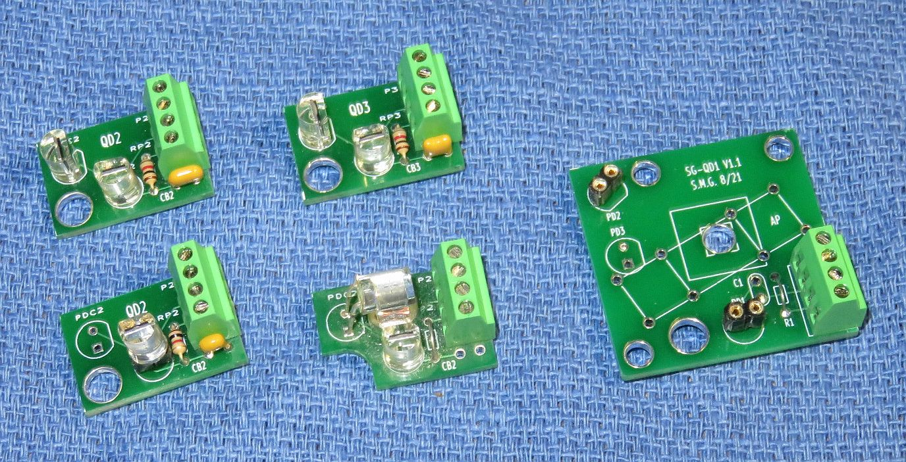
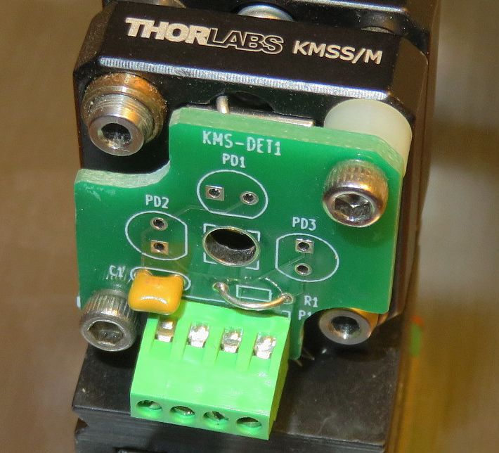
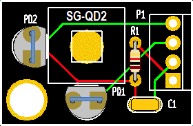
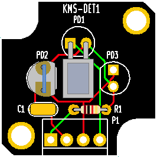
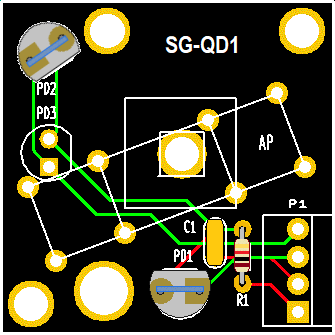
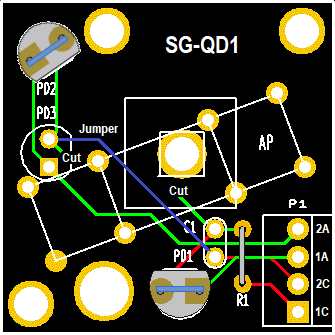

Dual Photodiode 1 (DP1)
Dual Photodiode 1 (DP1)
For Scanning Fabry-Perot Interferometers and Quadrature Decoders
Assembly and Operation Manual
Version 1.00 (25-Dec-21)
Copyright © 1994-2021
Sam Goldwasser
--- All Rights Reserved ---
For contact info, please see the
Sci.Electronics.Repair FAQ Email Links Page.
Reproduction of this document in whole or in part is permitted
if both of the following conditions are satisfied:
- This notice is included in its entirety at the beginning.
- There is no charge except to cover the costs of copying.
Table of Contents
Preface
For contact info, please see the
Sci.Electronics.Repair FAQ
Email Links Page.
Copyright © 1994-2021
All Rights Reserved
Reproduction of this document in whole or in part is permitted if both of the
following conditions are satisfied:
1. This notice is included in its entirety at the beginning.
2. There is no charge except to cover the costs of copying.
SG-DP is intended for use in hobbyist, experimental, research, and other
applications where a bug in the hardware will not
have a significant impact on the future of the Universe or anything else.
We will not be responsible for any consequences
of such bugs including but not limited to damage to the wafer FAB you
picked up on eBay for $1.98 + shipping, financial loss from the use of
37 spools of ABS due to the office 3-D printer fabricating a part 25.4x
too large in all dimensions, or bruising to your pet's ego from any number
of causes directly or indirectly related to SGPD1. ;-)
Introduction
Note: Local links and clickable graphics open in a single
new tab or window depending on your browser's settings.
This document describes the various simple PCBs used to convert a (usually
laser) beam into two electrical signals, typically differentiated by
polarization or phase. Common to all are that there are locations for two
bare photodiodes and for a plate or cube beam-splitter. The electrical
output is the photo-current which may be used directly with a load
resistor. Minor modifications are required to use these with the AB2 pre-amp.
There are several versions of these PCBs but all have the following:
- Pads for two photodiodes: These are typically for the silicon
photodiodes included with most of the kits that have the anode on the left
and cathode on the right with th legs facing down.
- Pads for a PD protect resistor: This is optional but protects the
photodiods and power supply if the photodiodes are accidentally installed
backwards or fail shorted.
- Input pin for bias voltage and GND: This is typically from an
Arduino, wall adapter, or 9 V battery.
- Pads for an AC bypass capacitor: For high speed operation, this
bypasses the power source for AC signals.
- Space for a plate or cube beam-splitter: The typical size can
range from a 0.125 inch (3 mm) PBS cube to a 1x0.5 inch (25x12.5 mm) NPBS
plate depending on the specific version of the PCB.
- Center hole: This allows the input beam to come from
beneath the PCB as in an SFPI.
- Mounting hole or holes: These are for either for #4 or #8 screws.
The photos below show some of the versions of the DP1 PCBs in various stages
of assembly.



Various SG-DP1 PCBs: Single Channel, Two Channel, with PBS and Beam from Behind, QD1 Modified for AB2, Mounted on KMS, QD1 Quad Decoder using AP and bits of CP Sheet
Specifications
The PCB designations are kind of arbitrary. ;-)
- SG-DET1: Mid-size form factor - 9/16x7/8 inches. Will fit 4 mm
BSC with 0.125 inch center hole for beam from behind. #8 mounting hole.
- SG-DET2: Smallest form factor - 1/2x3/4 inches. Will fit 6 mm
BSC with 0.125 inch center hole for beam from behind. #4 mounting hole.
- SG-QD2: Large form factor for BSC - 5/8x1 inches. Will fit 10 mm
BSC with 0.125 inch center hole for beam from behind. #8 mounting hole.
- KMS-DET1: Designed to fit on Thorlabs KMS mirror mount, part of
the selectable FSR Scanning Fabry-Perot Interferometer - 1x1 inches with
cutouts for access to adjustment screws. Will fit 6 mm BSC with 0.125
inch center hole for beam from behind. #4 mounting holes.
- SG-QD1: Largest form factor for BSC or variable Attenuator
Plate (AP) - 1-3/16 x 1-3/16 inches. Will fit 12 mm BSC or >1 inch plate
with 0.125 inch center hole for beam from behind. #4 and #8 mounting holes.
Theory of Operation
The type of detector use here is called a "biased photodiode" and is
essentially a current source with an output proportional to incident
optical power.
A silicon photodiode (PD) when reverse biased
by a positive DC voltage (battery or power supply) allows a current
(designated Ipd) to flow with a sensitivity measured in amps / watt (A/W) or
for our purposes, mA/mW of incident laser power. The sensitivity for
silicon at 633 nm is typically between 0.3 and 0.4 mA/mW and linear
up to several mW for the types of PDs used here. This relationship
holds even when a load resistor R-Load is installed between the PD
and circuit common (negative of the bias supply),
resulting in an output voltage that is linear with respect to
incident laser power based on Ipd * R-Load.
For example, with a laser power of 0.5 mW, a PD sensitivity of 0.35 mA/mW,
and R-Load of 10K ohms, Vo would be 1.75 V.
The most basic circuit is shown below:
Silicon
Photodiode
+---------|<|-------+-------o Output to scope or DMM
| Cathode Anode |
| /
| \ R-Load
| /
| Bias Supply \
| +| | - |
+--------||||-------+-------o GND / Common / Return
| |
Note the polarity of the PD with its cathode connected to the positive of the
power supply and thus reverse biased. With no light incident on the PD,
only the so-called "dark current" will flow, which is generally small enough
to be ignored (nanoamps or less).
Circuits like this are used in commercial detectors like the Thorlabs
DET110 and for DP1 as well. With the PD back-biased, the load can be
an actual resistor as shown or the inverting input of an op-amp with
its non-inverting input tide to 0 V / GND.
The PD1 PCBs include only the photodiodes, R-Protect, and an AC bypass
capacitors as shown in the schematic below.
Schematic
The schematics for the DP1 Version 1.0 PCBs are the same except
for a spot for PD3 in parallel with PD2 on some. The SG-QD1 version
is set up to use a variable attenuator plate as a non-polarizing beam-splitter.
To minimize polarization effects, the AP is set at a 20 or 30 degree
angle instead of 45 degrees, so the reflection is in a different direction.
If used with a PBS or NPBS cube, PD3 can be used instead. KMD-DET1
can use PD2 or PD3 which are wired in parallel.
R-Protect PD1 J1-3
Vb+ >-----/\/\-----+----|<|-----<<------------+----------o Output 1
| |
| PD2 J1-4 |
+----|<|-----<<----------------+------o Output 2
| | |
| / /
_|_ R-Load1 \ \ R-Load2
--- / /
| \ \
| J1-2 | |
+------------<<------------+---+------o Ground
|<----- SBB or QDx PCB ----->|<---- Output / Power Wiring ----->
The graphics below show the layout diagrams for the various versions of
the PCB with the parts installed:






SG-DP1 PCB Layouts Version 1.00: Small with Beam from the Side, Small
with Beam from Behind, Medium, Large, SFPI with Beam from Behind, Quad
Decoder, Quad Decoder Modified for AB2
To use these PCBs for a quad decoder requires an optical setup such as one of
the following:

The left diagram is the classic arrangement with a plate-type Non-Polariziing
Beam-Splitter (NPBS) at 45 degrees. An NPBS cube could also be used.
The center and right diagrams use a variable Attenuator Plate (AP) in place
of the NPBS, primarily due to cost. But so as not to mess with the
polarization too much, it is set at a small angle, so its photodiode needs
to be mounted at a different location. The difference between the two
diagrams is only in the arrangement of the LPs and QWP: The one on the
right can use the same type of CP sheet for both.
Parts List
All versions have locations for the following parts:
Prt Description Comments
-------------------------------------------------------------------------
- PCB, Various First released version
C1 Capacitor, 0.1 µF AC bypass
R1 Resistor, 1K, 1/8 W PD protect (current limiting)
SKT1 Female-male socket, 2 pins For PD1
SKT2 Female-male socket, 2 pins For PD2
PD1 Silicon photodiode Optical sensor 1
PD2 Silicon photodiode Optical sensor 2
J1 Header/shell/pins or Screw Power / signal
terminal block, 4 pin
BS1 Beam-splitter Type depends on specific application
Other bits may be required like pieces of CP or LP sheet, a spacer or washer
for raising the beam-splitter, and a mounting screw and spacer.
Assembly
No detailed "Heathkit™-style" assembly instructions for these, sorry. ;-)
All electrical components are through-hole.
A low power soldering iron with narrow tip and thin (e.g., #22 AWG) rosin-core
solder will be required. DO NOT even think about attempting this without
suitable soldering equipment. It's well worth the investment. A Weller
soldering gun or propane torch will not work. :) Rosin core solder is also
essential. And while
I'm quite confident that you never make mistakes, a means of component removal
such as a de-soldering pump (e.g., a full size SoldaPullt™) will be
highly desirable. Screwing up component removal can easily ruin the PCB
and is not covered under the limited unlimited warranty. :-)
Proper soldering technique will be such that the exposed solder on each
pad should be shiny with a concave profile. It should not be a blob and
just needs to fill the hole. Solder is not glue.
Some excess solder doesn't hurt anything
but looks unprofessional. A 10X magnifier may come in handy for
inspection. Residual rosin can be cleaned off with
isopropyl alcohol or an environmentally-friendly electronic solvent.
However, leaving the rosin alone is also acceptable (if ugly).
Total assembly time should be well under 7 minutes for someone proficient
in fine soldering. Cutting component leads to 1/4 to 3/8 inch before
installation will simplify soldering as the long leads won't be poking
you in your one good eye. :( :) Then trim flush after soldering.
Troubleshooting? What troubleshooting? ;-) It's only a half dozen
components. Check for solder bridges and
unsoldered leads, that the correct parts are installed, and for those with
polarity, that they in the right way around.
For mostly friendly tech support, feel free to contact me via the link at the
top of this page. ;-)